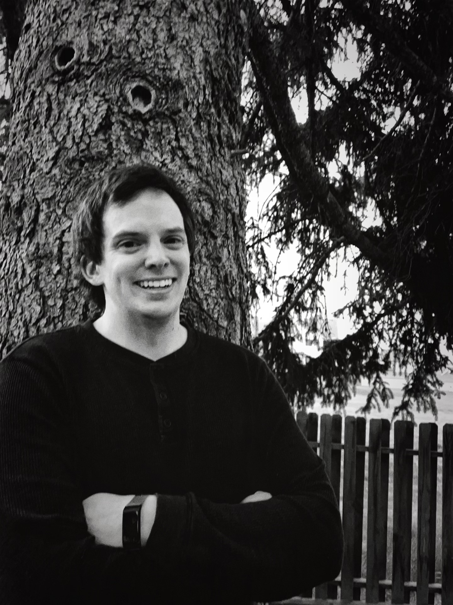

Data Scientist
Bridging complexity, uncertainty, and action through data
I’ve led analytics work across multiple federal agencies, applying a systems lens to real-world problems that matter. I thrive in ambiguous settings where goals are underdefined, data is incomplete, and the next step isn’t always obvious. I'm comfortable working through uncertainty and use rigorous methods to deliver insights that are both actionable and grounded. My work spans predictive modeling, causal design, product strategy, and operational analytics. I'm always learning and exploring new tools to better connect data with impact.